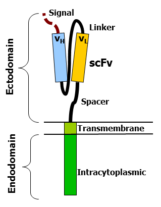

7.9
CAR-T: Chimeric antigen receptor of T cells
Les CAR-t font partie des médicaments à thérapie génique en mimant le TCR des Lymphocytes T, leur conférant une action anti-tumorale. Ils confèrent une immunité non limitée par le CMH classe I en rendant le lymphocyte T indépendant du complexe TCR.
Le TCR utilise les motifs ITAM intra-cellulaires composés de 8 acides aminés, retrouvés dans les récepteurs à Tyrosine Kinase, initiant la cascade de signalisation des cellules immunitaires.
1 CAR-T: Composition
Domaine extracellulaire appelé single-chain variable fragment scFv. C’est le site de reconnaissance de l’Ag

2 Isolation des cellules mononucléées périphériques
Leucaphérèse
2.1 Isolement sur Ficoll
Le sang est déposé en gradient de densité dans un tube à centrifuger, au dessus d’une couche de polyfluorocarbone liquide Ficoll®. On centrifuge ensuite